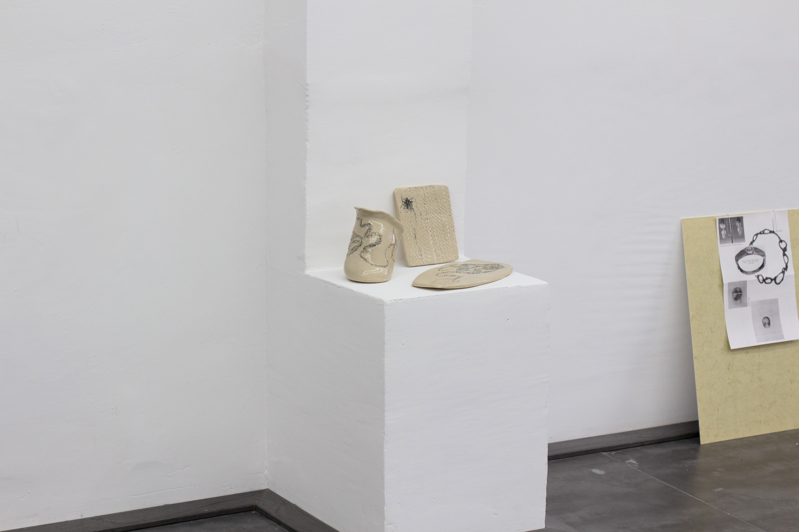
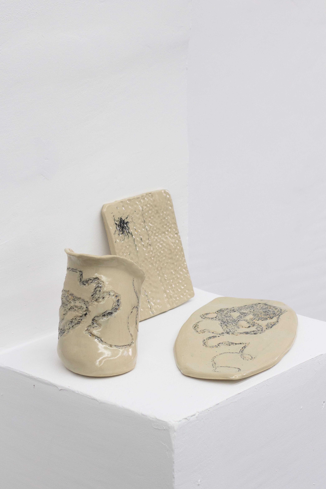
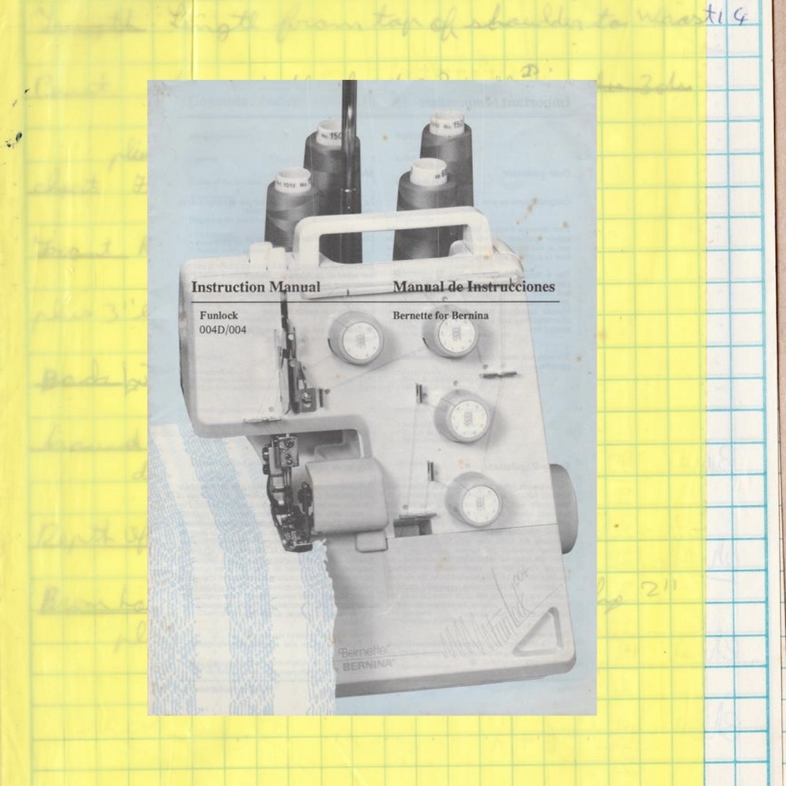

2022
Exhibited at the Malta Society of Arts, as part of ‘Clay / Craft / Concept’
A collection of archival scans and ceramics featured in Art vs Craft. All images and artworks are by Martina Farrugia.